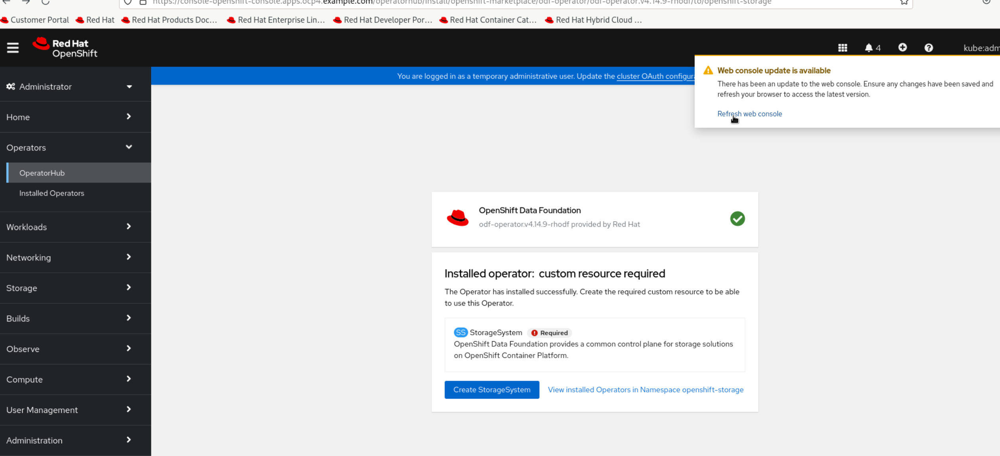
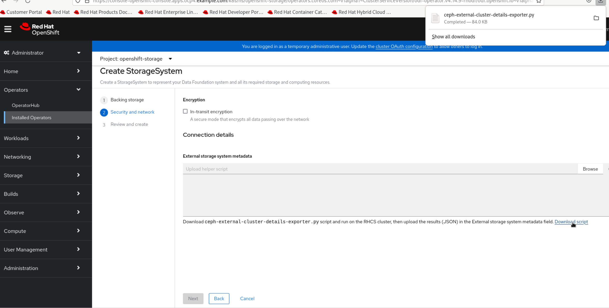
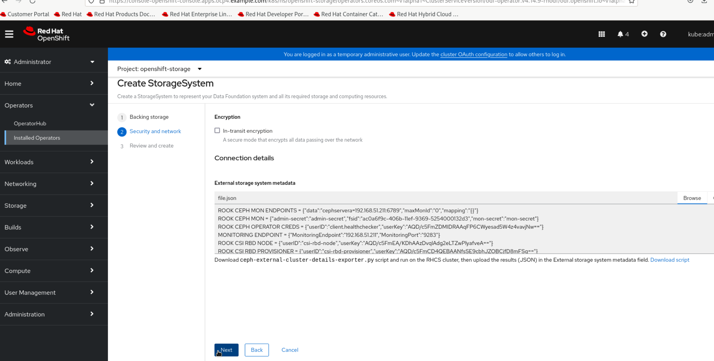

Deploy RHOSP18 with Ceph integration and verify your deployment
Configure RHOSP18 control plane to use Ceph storage cluster
Configure RHOSP18 data plane to use Ceph storage cluster
Install OpenShift Data Foundation operator
-
Access GUI console of the
workstationVM asstudentuser. -
Open terminal and login to the
utilityvm aslabuser. -
Get the kubeadmin password from
/home/lab/ocp4/auth/kubeadmin-passwordfile.echo $(cat /home/lab/ocp4/auth/kubeadmin-password) -
Select the password string and copy it.
-
Get the console url of your ocp cluster.
oc whoami --show-console -
Right click on the console url and click on
Open Linkmenu option. -
Firefox browser will open-up with the console login page for your ocp cluster.
-
Provide username as
kubeadminand paste the password in the password field.
-
Click on
Log inbutton to access the RedHat OpenShift console. -
On right hand side, expand
Operatorsand click onOperatorHub. -
In the search box type
odfand click onOpenShift Data Foundationoption in displayed search results. -
Click on
Installbutton on top and then on the next page scroll down to click on theInstallbutton at bottom. -
Wait for the OpenShift Data Foundation operator to get installed.
-
Click on the
Refresh web consolepop-up option on top right corner. -
When the page is refreshed, click on
Create StorageSystembutton.You may need to navigate to the Operators then Installed Operators and then click on OpenShift Data Foundation option to get the option to create storage system if you do not see it after page refresh. -
Select Create an external storage platform option and make sure Red Hat Ceph Storage option is selected, then click on Next button.
-
Click on the Download script option on the next page.
 -
Access the lab outside the gui session to login to
workstationvm asstudentuser. -
Copy
ceph-external-cluster-details-exporter.pyscript from workstation vm to utility vm.scp /home/student/Downloads/ceph-external-cluster-details-exporter.py lab@utility:/tmp/ -
Login to
utilityvm aslabuser.ssh lab@utility -
From there, copy the
ceph-external-cluster-details-exporter.pyfile tocephserveravm.[lab@utility ~]$ scp /tmp/ceph-external-cluster-details-exporter.py root@cephservera: -
Login to
cephserveraasrootuser.ssh root@cephservera -
Run the script on cephservera with arguments
--rbd-data-pool-name volumes.python ceph-external-cluster-details-exporter.py --rbd-data-pool-name volumesSample output[root@cephservera ~]# python ceph-external-cluster-details-exporter.py --rbd-data-pool-name volumes [{"name": "rook-ceph-mon-endpoints", "kind": "ConfigMap", "data": {"data": "cephservera=192.168.51.211:6789", "maxMonId": "0", "mapping": "{}"}}, {"name": "rook-ceph-mon", "kind": "Secret", "data": {"admin-secret": "admin-secret", "fsid": "ac0a6f9c-406b-11ef-9369-5254000132d3", "mon-secret": "mon-secret"}}, {"name": "rook-ceph-operator-creds", "kind": "Secret", "data": {"userID": "client.healthchecker", "userKey": "AQD/c5FmZDMIDRAAqFP6CWyesad5W4z4vavjNw=="}}, {"name": "monitoring-endpoint", "kind": "CephCluster", "data": {"MonitoringEndpoint": "192.168.51.211", "MonitoringPort": "9283"}}, {"name": "rook-csi-rbd-node", "kind": "Secret", "data": {"userID": "csi-rbd-node", "userKey": "AQD/c5FmEA/KDhAAzDvqlAdg2eLTZwPlyafveA=="}}, {"name": "rook-csi-rbd-provisioner", "kind": "Secret", "data": {"userID": "csi-rbd-provisioner", "userKey": "AQD/c5FmCD4QEBAANfsSE9cbhJZOBCjfD8mFSg=="}}, {"name": "rook-ceph-dashboard-link", "kind": "Secret", "data": {"userID": "ceph-dashboard-link", "userKey": "https://192.168.51.211:8443/"}}, {"name": "ceph-rbd", "kind": "StorageClass", "data": {"pool": "volumes", "csi.storage.k8s.io/provisioner-secret-name": "rook-csi-rbd-provisioner", "csi.storage.k8s.io/controller-expand-secret-name": "rook-csi-rbd-provisioner", "csi.storage.k8s.io/node-stage-secret-name": "rook-csi-rbd-node"}}] -
Exit from the
cephserveraand then from theutilityvm’s session to be back on theworkstationvm. -
Copy the json output generatedf by
ceph-external-cluster-details-exporter.pyscript on cephservera and paste it infile.jsonon workstation vm.vi file.json -
Go back to the gui session of the workstation vm.
-
Click Browse button under External storage system metadata and select
file.jsonfile and then click Next. -
Click on the Create StorageSystem button on the next page.

Storage class installation
-
Expand Storage option on right of the page and select StorageClasses option under it and click on Create StorageClass button on top right.

-
On the next page, create storage class with options as below:
Name: ocs-external-storagecluster-ceph-images
Provisioner: openshift-storage.rbd.csi.ceph.com
Storage Pool: images
Keep all other options as default.

-
Follow the same process as above to create another storage class with options:
Name: ocs-external-storagecluster-ceph-vms
Provisioner: openshift-storage.rbd.csi.ceph.com
Storage Pool: vms
Keep all other options as default.
configure controlplane to use redhat ceph storage cluster
Outside the gui session on terminal login to utility vm as lab user and be in the ~/rhoso-files/rht/ director to proceed further.
-
Extract the FSID from the Red Hat Ceph Storage secret:
oc get secret ceph-conf-files -o json | jq -r '.data."ceph.conf"' | base64 -d | grep fsid | sed -e 's/fsid = //'Sample output[lab@utility rht]$ oc get secret ceph-conf-files -o json | jq -r '.data."ceph.conf"' | base64 -d | grep fsid | sed -e 's/fsid = //' 4cf346e4-385c-11ef-97ad-5254000132d3
-
Edit
osp-ng-ceph-novacompute-cm.yamlfile for ceph-nova configmap and changerbd_secret_uuidvalue with the fsid string obtained from your lab in the above command.vi osp-ng-ceph-novacompute-cm.yaml
Apply the configmap settings in osp-ng-ctlplane-deploy-ceph.yaml file.
+
oc apply -f osp-ng-ceph-novacompute-cm.yaml-
Edit
osp-ng-ctlplane-deploy-ceph.yamlfile forOpenStackControlPlanedeployment and changerbd_secret_uuidvalue with the fsid string obtained from your lab in earlier step.vi osp-ng-ctlplane-deploy-ceph.yaml -
Deploy OpenStack control plane by applying
osp-ng-ctlplane-deploy-ceph.yamlfile.oc apply -f osp-ng-ctlplane-deploy-ceph.yaml -
Track progress of control plane deployment
watch oc get pods -
Verify deployment is successful
oc get openstackcontrolplanesSample output[lab@utility rht]$ oc get openstackcontrolplanes NAME STATUS MESSAGE openstack-galera-network-isolation True Setup complete [lab@utility rht]$
-
Create nova-custom-ceph service for openstack data plane by applying
osp-ng-nova-ceph-ansible-custom-svc.yamlfile.oc apply -f osp-ng-nova-ceph-ansible-custom-svc.yaml -
Create OpenStack dataplane node-set by applying
osp-ng-dataplane-node-set-deploy-ceph.yamlfileoc apply -f osp-ng-dataplane-node-set-deploy-ceph.yaml -
Deploy OpenStack dataplane by applying
osp-ng-dataplane-deployment.yamlfile.oc apply -f osp-ng-dataplane-deployment.yaml -
Check the jobs being run by the deployment process.
watch oc get jobsPress
Ctrl+Cto exit from the watch command. -
Check the pods being run by the deployment process.
watch oc get podsPress
Ctrl+Cto exit from the watch command. -
Verify successful completion of the dataplane deployment
oc get openstackdataplanedeploymentsSample output[lab@utility rht]$ oc get openstackdataplanedeployments NAME NODESETS STATUS MESSAGE openstack-edpm-ipam ["openstack-edpm-ipam"] True Setup complete [lab@utility rht]$
-
Discover hosts
oc rsh nova-cell0-conductor-0 nova-manage cell_v2 discover_hosts --verboseSample output[lab@utility rht]$ oc rsh nova-cell0-conductor-0 nova-manage cell_v2 discover_hosts --verbose Modules with known eventlet monkey patching issues were imported prior to eventlet monkey patching: urllib3. This warning can usually be ignored if the caller is only importing and not executing nova code. 2024-07-12 11:14:41.596 5976 WARNING oslo_policy.policy [None req-ccecbeb1-247e-422b-8d3b-82d1c5a7841b - - - - - -] JSON formatted policy_file support is deprecated since Victoria release. You need to use YAML format which will be default in future. You can use ``oslopolicy-convert-json-to-yaml`` tool to convert existing JSON-formatted policy file to YAML-formatted in backward compatible way: https://docs.openstack.org/oslo.policy/latest/cli/oslopolicy-convert-json-to-yaml.html. 2024-07-12 11:14:41.597 5976 WARNING oslo_policy.policy [None req-ccecbeb1-247e-422b-8d3b-82d1c5a7841b - - - - - -] JSON formatted policy_file support is deprecated since Victoria release. You need to use YAML format which will be default in future. You can use ``oslopolicy-convert-json-to-yaml`` tool to convert existing JSON-formatted policy file to YAML-formatted in backward compatible way: https://docs.openstack.org/oslo.policy/latest/cli/oslopolicy-convert-json-to-yaml.html. Found 2 cell mappings. Skipping cell0 since it does not contain hosts. Getting computes from cell 'cell1': 8b4dc29e-cd9f-4449-8486-6336b4d35c88 Checking host mapping for compute host 'compute01.ocp4.example.com': e4cb88d4-4457-47e2-93de-7b89db3d65fa Creating host mapping for compute host 'compute01.ocp4.example.com': e4cb88d4-4457-47e2-93de-7b89db3d65fa Checking host mapping for compute host 'compute02.ocp4.example.com': b1ead9bc-7a3e-4ebf-baff-db0ced1626aa Creating host mapping for compute host 'compute02.ocp4.example.com': b1ead9bc-7a3e-4ebf-baff-db0ced1626aa Found 2 unmapped computes in cell: 8b4dc29e-cd9f-4449-8486-6336b4d35c88 [lab@utility rht]$ oc rsh openstackclient
-
Verify the dataplane deployment by launching instance
export GATEWAY=192.168.51.254 export PUBLIC_NETWORK_CIDR=192.168.51.0/24 export PRIVATE_NETWORK_CIDR=192.168.100.0/24 export PUBLIC_NET_START=192.168.51.91 export PUBLIC_NET_END=192.168.51.99 export DNS_SERVER=8.8.8.8 openstack flavor create --ram 512 --disk 1 --vcpu 1 --public tiny curl -O -L https://github.com/cirros-dev/cirros/releases/download/0.6.2/cirros-0.6.2-x86_64-disk.img openstack image create cirros --container-format bare --disk-format qcow2 --public --file cirros-0.6.2-x86_64-disk.img openstack security group create basic openstack security group rule create basic --protocol tcp --dst-port 22:22 --remote-ip 0.0.0.0/0 openstack security group rule create --protocol icmp basic openstack security group rule create --protocol udp --dst-port 53:53 basic openstack network create --external --provider-physical-network datacentre --provider-network-type flat public openstack network create --internal private openstack subnet create public-net \ --subnet-range $PUBLIC_NETWORK_CIDR \ --no-dhcp \ --gateway $GATEWAY \ --allocation-pool start=$PUBLIC_NET_START,end=$PUBLIC_NET_END \ --network public openstack subnet create private-net \ --subnet-range $PRIVATE_NETWORK_CIDR \ --network private openstack router create vrouter openstack router set vrouter --external-gateway public openstack router add subnet vrouter private-net openstack server create \ --flavor tiny --network private --security-group basic \ --image cirros test-server
[root@compute01 ~]# podman logs nova_compute | grep 0d19bf2b-806e-4a12-a81e-170c6c89bcb9 | grep ERROR . . . . . . 2024-07-12 11:17:39.631 2 ERROR nova.compute.manager [None req-795d8b7c-bedf-4f82-a8ba-023887d95263 7adc74ec29fc4f3ea8a24d84973c13f2 6e790b31b10a418ebbb8e67fc59dd023 - - default default] [instance: 0d19bf2b-806e-4a12-a81e-170c6c89bcb9] Failed to build and run instance: libvirt.libvirtError: Unable to delete file /var/lib/nova/instances/0d19bf2b-806e-4a12-a81e-170c6c89bcb9/console.log: Permission denied . . . . . .
[root@compute01 ~]# grep denied /var/log/audit/audit.log type=AVC msg=audit(1720783057.158:18933): avc: denied { search } for pid=848 comm="virtlogd" name="nova" dev="vda4" ino=8393239 scontext=system_u:system_r:virtlogd_t:s0-s0:c0.c1023 tcontext=system_u:object_r:container_file_t:s0 tclass=dir permissive=0 [root@compute01 ~]#
Apply other ceph related yaml except controlplane and dataplane-node-set
Install ODF operator Create storageclass for volumes and images with appropriate name
<screenshots>
Download ceph-external-cluster-details-exporter.py script
scp the script from workstation to lab@utility to root@cephservera
Run the script on cephservera
python /tmp/ceph-external-cluster-details-exporter.py --rbd-data-pool-name volumes
sample output
[root@cephservera ~]# python /tmp/ceph-external-cluster-details-exporter.py --rbd-data-pool-name volumes
copy the output and paste it in file.json on workstation vm
Browse file.json
<screenshots>
Under Storage drop-down on left hand pane, click on StorageClasses
Click on Create StorageClass button on top
Create storage class with name ocs-external-storagecluster-ceph-images and pool images
Create another storage class with name ocs-external-storagecluster-ceph-vms and pool vms
configure controlplane to use redhat ceph storage cluster
Login to compute nodes and register:
subscription-manager register subscription-manager repos --disable=* subscription-manager repos --enable=rhceph-6-tools-for-rhel-9-x86_64-rpms --enable=rhel-9-for-x86_64-baseos-rpms --enable=rhel-9-for-x86_64-appstream-rpms --enable=rhel-9-for-x86_64-highavailability-rpms --enable=openstack-beta-for-rhel-9-x86_64-rpms --enable=fast-datapath-for-rhel-9-x86_64-rpms dnf install -y podman systemctl enable podman --now systemctl status podman
-
Open
workstationVM’s GUI console and login asstudentuser with password student. -
Open terminal and from there login to
utilityvm aslabuser. -
Run
cat ~/ocp4/auth/kubeadmin-passwordand copy the password of kubeadmin user. -
Run
oc whoami --show-consolecommand to probe for the console url of the OpenShift cluster. -
Right click on the url and select
Open Linkoption from the menu. -
The link will e opened in the Firefox web broswer.
-
Click on the option to login as kube amdin.
-
Type
kubeadminin the username field and paste the password copied earlier form the terminal.
You are now logged in to the OpenShift web console.
-
Click on
Operatorsoption on right pane to expand it and then click onOperatorHub -
Search for the string
ODForOpenShift Data Foundation -
Install the operator by selecting all default options.
-
When the operator is installed, click on
Create StorageSystem